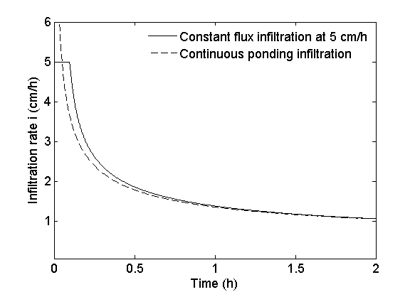

GreenAmpt
Infiltration model at constant rainfall.
Contents
Syntax
[i, t, tp, I, Ip, L] = GreenAmpt (Ko, rainfall, theta, hf)
Model description
This approach assumes constant rainfall infiltration and uses a "time compression approximation" as described by Kutilek (1980). The model was developed by Green and Ampt in 1911.
Assumptions
- The soil in the wetted region has constant properties.
- The matric potential at the wetting front is constant and equal to hf.
Inputs
Ko = Hydraulic conductivity in the wetting front. This value is
different from saturated hydraulic conductivity (Ksat), and it is
usually assumed to be 1/2*Ksat. Unit is in [cm/h]. Scalar. rainfall = vector of two elements. The first element, rainfall(1), is
the rainfall rate in [cm/h], and the second element, rainfall(2),
is the duration of the rainfall event in [h]. theta = vector of two elements. The first element of the vector is
the initial volumetric water content, and the second element is the
volumetric water content at the wetting front [cm3/cm3]. hf = scalar describing the matric potential of the soil (negative value) at the wetting
front, usually represented as hf. This is the matric potential corresponding to thetaf.
It is sometimes assumed to be similar to the bubbling pressure [cm].Outputs
i = infiltration rate [cm/h].
tp = Ponding time [h].
I = cumulative infiltration [cm].
Ip = Cumulative infiltration at ponding time [cm].
L = Depth of the wetting front [cm].Example
For a soil with a Ko=0.44 cm/h receiving a rainfall with intensity of 5 cm/h for a period of 2 hours, initial soil water content of 0.250 cm3/cm3 and a soil volumetric water content in the wetting front assumed to be a value similar to the total porosity, and matric potential at the surface at ponding time is equal to zero (ho=0) and a matric potential at the wetting front similar to the bubling pressure of the soil hf=-20 cm, then the function in Matlab can be called as follows:
[i, tp, I, Ip] = GreenAmpt (0.44,[5 2] , [0.25 0.5], -20);
Ponding time = 0.10 hours
Wetting front depth = 14.12 cm
See also
References
Green W.H. and Ampt G.A. 1911. Studies on soil physics, 1. The flow of air and water through soils. J. Agric. Sci, 1911.
Kutilek, M. 1980. Constant-Rainfall Infiltration. J Hydrol 45: 289-303. doi:Doi 10.1016/0022-1694(80)90025-6.
Mein, R.G. and Larson, C.L. 1973. Modeling Infiltration during a Steady Rain. Water Resour Res 9: 384-394. doi:Doi 10.1029/Wr009i002p00384.
Updates
Created by Andres Patrignani and Tyson Ochsner 02-Oct-2013
% Define variables r = rainfall(1); tr = rainfall(2); delta_theta = theta(2)-theta(1); ho = 0; delta_h = ho-hf; I = 0:0.01:r*tr; % Define iteration steps. Maximum cumulative infiltration... % should be equal to rainfall intensity (r) times the duration of the rainfall event (tr). % Step 1 - Caluclate hypothetical ponded infiltration (Ip) corresponding to ip=r. Ip = delta_theta*delta_h /(r/Ko-1); % Step 2 - Calculate time required for rainfall to supply Ip. tp = delta_h*delta_theta/(r*(r/Ko-1)); % tp can also be calculated as tp=Ip/r, for constant r. % Pre-allocate memory tponded = nan(1,length(I)); iponded = nan(1,length(I)); t = nan(1,length(I)); i = nan(1,length(I)); for j=1:length(I) % Step 3 Calculate constant ponding curve tponded(j) = 1/Ko * (I(j)- delta_h*delta_theta*log((delta_h*delta_theta+I(j))/(delta_h*delta_theta))); iponded(j) = Ko*(1+delta_h*delta_theta/I(j)); % Step 4 - Calculate time t at which each arbitrary cumulative infiltration (I) occurs. if I(j)<Ip t(j) = I(j)/r; elseif I(j)==Ip t(j) = tp; else t(j) = tp+1/Ko * (I(j)-Ip- delta_h*delta_theta*log((delta_h*delta_theta+I(j))/(delta_h*delta_theta+Ip))); end % Step 5 - Calculate infiltration rate if t(j)<tp i(j) = r; elseif t(j)>=tp || t(j)<=tr i(j) = Ko*(1+delta_h*delta_theta/I(j)); else i(j) = 0; end L = I./delta_theta; end % Truncate variables at the end of the rainfall event j = t <= tr; %times before the end of the rainfall event I = I(j); L = L(j); i = i(j); iponded = iponded(j); t = t(j); tponded = tponded(j); % Plot plot(t,i,'-k'); hold all plot(tponded, iponded,'--k') legend (['Constant flux infiltration at ',num2str(r),' cm/h'],'Continuous ponding infiltration') legend boxoff xlabel('Time (h)','FontSize',13) ylabel('Infiltration rate i (cm/h)','FontSize',13); minY = max((min(iponded)-1),0); maxX = max(tr,2); xlim([0 maxX]) maxY = max(i+1); ylim([minY maxY]) set(gca,'FontSize',13) disp (['Ponding time = ',num2str(sprintf ('%.2f',tp)),' hours']) disp(['Wetting front depth = ',num2str(sprintf('%.2f',max(L))),' cm'])
Copyright 2013 This function is part of the Soil Physics Toolbox created by the Soil Physics team at the Plant and Soil Sciences Department, Oklahoma State University.